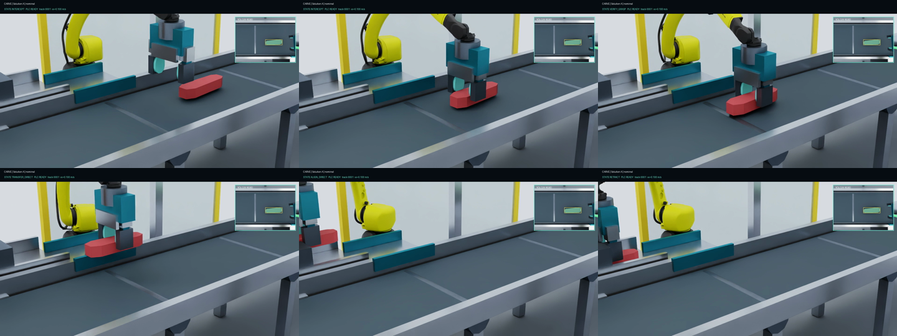
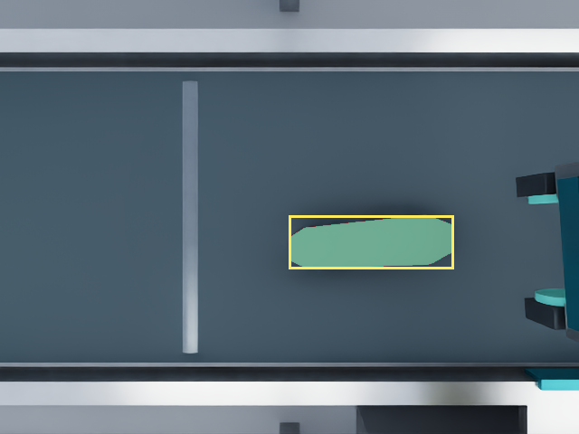
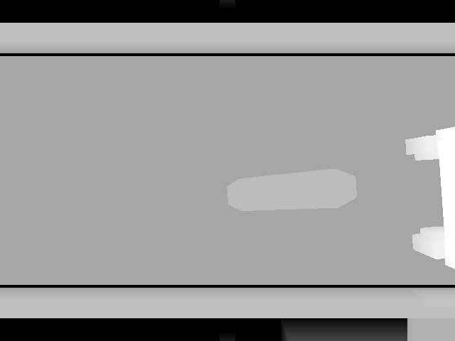
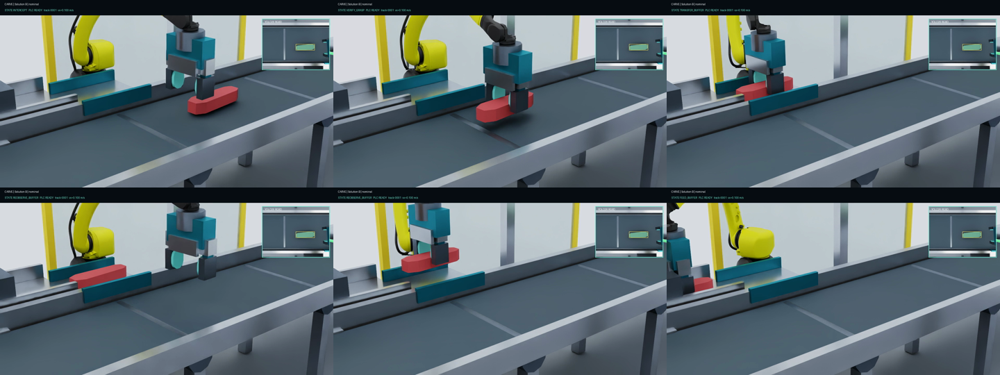
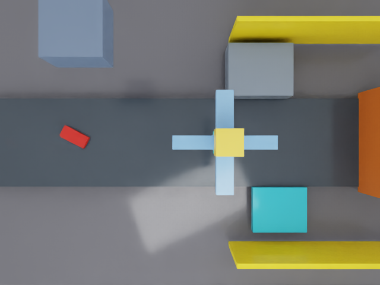
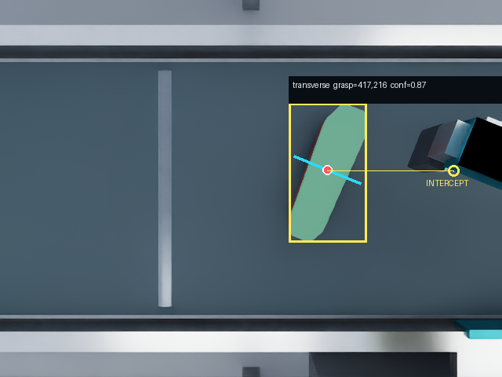
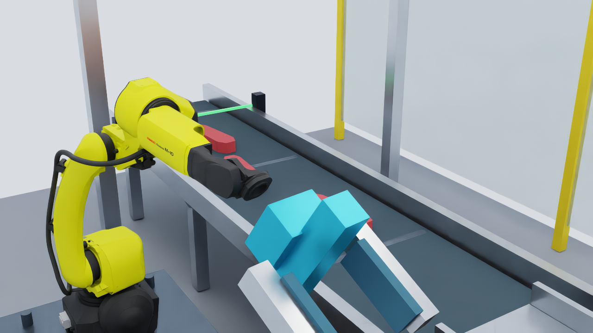

Slow diagonal
0.06 m/s | -35 deg | 19.8 mm
Isaac Sim 6.0.1 | 27 August 2026
A simulated FANUC arm detects and tracks a workpiece from rendered RGB and depth. It intercepts the moving target, confirms contact, and places it at the cutter entrance.
cut_target_frame, released, and verified.The results come from Isaac Sim artifacts. A gate passes only when sensor output, trajectory execution, contact, retention, delivery, logging, and stage reload agree.



The upper path turns camera pixels into a timed grasp. The lower path sends joint targets to the physical simulation and returns encoder, contact, PLC, and clock feedback.
Solid amber: information and commands that advance the cycle.
Dashed gray: simulator measurements, PLC state, and evidence feedback.
New sensor evidence can change the plan before commitment. After commitment, contact and machine state decide whether the robot continues or recovers.

The scene covers three uniform product families. Geometry, mass, color, and grasp settings are recipe inputs. The cutter entrance is a stationary tray.


| Recipe | Nominal dimensions | Mass | Variation | Handling |
|---|---|---|---|---|
| Beef tenderloin | 360 x 120 x 85 mm | 2.75 kg | size + yaw | wide grasp |
| Pork loin | 340 x 115 x 82 mm | 2.75 kg | size + yaw | integrated baseline |
| Chicken breast | 210 x 125 x 48 mm | 0.48 kg | planform + yaw | narrower grasp |
cut_target_frame.YOLO supplies the primary mask. Depth and calibration recover position. Mask geometry selects a grasp point and jaw axis. Tracking predicts the intercept.


Synthetic holdout results do not estimate real-camera performance.
Six seeded cases change belt speed, lateral position, yaw, and route. Every case passed contact, retention, motion, and delivery gates.
0.06 m/s | -35 deg | 19.8 mm
0.10 m/s | 0 deg | 10.8 mm
0.14 m/s | 32 deg | 11.6 mm
0.18 m/s | 68 deg | 10.4 mm
0.22 m/s | -72 deg | 11.2 mm
0.16 m/s | 28 deg | 20.7 mm
The planner creates a timed Cartesian target. Lula IK maps it to six joints. A preflight check rejects unsafe commands before the articulation controller applies them.

JointTrajectory executed. External MoveIt action execution remains untested.Both routes share perception, interception, contact checks, cutter gating, release verification, and recovery. The buffer adds a second pose observation.
Shorter route. It requires a trustworthy initial pose and cutter readiness.
Measures pose change, corrects the regrasp, and confirms new contact.
The PLC model supplies machine state and permissives. The robot cell returns results, faults, and a timestamped trace.
| Producer | Output | Consumer | Purpose |
|---|---|---|---|
| Camera | RGBDFrame | Vision | Pixels, depth, calibration, exposure time. |
| Vision | VisionObservation | Tracker | Mask, pose, class, confidence, latency. |
| Grasp selector | VisionGraspProposal | Planner | Point, yaw, jaw width, confidence. |
| Tracker | ObjectTrack | Planner | Identity, velocity, uncertainty, future state. |
| Planner | InterceptPlan | Supervisor | Pose, time, validity, commit, abort. |
| Controller | joint targets + status | Isaac + supervisor | Bounded motion and measured completion. |
A fault run passes when the controller detects the condition, avoids false delivery, reaches the required recovery state, and records matching evidence.
No bilateral contact. Open, retreat, recover.
No permissive. Route attached product to reject.
Reject the plan before commitment.
Stop conveyor, hold, enter safe stop.
The domain layer is testable without Isaac. The integrated runner is still required for claims about cameras, articulation, contact, physics, and delivery.
# Validate setup
.\validate_setup.ps1
# Run Solution A or B
.\run_solution_a.ps1
.\run_solution_b.ps1# Speed and pose matrix
.\run_speed_pose_matrix.ps1 -IncludeSolutionB
# Complete suite
.\run_tests.ps1isaac_sim/scene2_builder.pyUSD cell, arm, gripper, sensors, frames, guards, buffer, cutter, PLC.
isaac_sim/run_scene2_integrated.pyFixed-step perception, planning, IK, articulation, grasp, routes, recovery, evidence.
isaac_sim/yolo_perception.pyYOLO26 on rendered RGB with depth and calibration.
meatcell/grasp_selection.pyOrientation class and high-clearance mask grasp.
meatcell/tracking.pyIdentity, velocity, covariance, future pose.
meatcell/interception.pyValidity, reach, timing, uncertainty, safety.
meatcell/trajectory.pySix-joint trajectory validation and sampling.
meatcell/solutions.pyDirect and buffered routes with PLC gates.
tools/audit_scene2_integrated.pyIndependent fail-closed artifact audit.
The simulation is a runnable engineering baseline. It is not a substitute for workpiece trials, real sensing, robot commissioning, machine integration, or safety validation.
The FANUC asset is a description reference, not an OEM-certified digital twin. Other cell equipment is project geometry.
Workpieces are rigid. Deformation, moisture, adhesion, tearing, pressure, and sanitation effects are absent.
Finger effort, contact impulses, friction, and compliance are uncalibrated proxies.
The model uses synthetic imagery. Real glare, fluids, occlusion, blur, and domain shift remain unmeasured.
Cutter phase, feed speed, encoder behavior, permissives, and faults need real PLC captures.
ROS 2 JointTrajectory ran. Live MoveIt FollowJointTrajectory execution was unavailable.
Collect real camera, calibration, workpiece, grasp, cutter PLC, and OEM limit data. Then commission the external ROS 2 and MoveIt controller path.
The clean suite passed 161 Python tests, setup, fixed-step clock, save-reload, ROS 2 sensors and trajectory, gripper, integrated A and B, and artifact audits. Matrix data is in matrix_summary.json. Commands and paths are in OVERNIGHT_REPORT.md.
The report follows REPORT_DESIGN_STANDARD.md. The cell layout decision is documented in SCENE_DESIGN_REPORT.html. Sources include W3C accessibility guidance, GOV.UK layout guidance, Nielsen Norman Group research on technical readers, scanning research, and Carbon chart guidance.